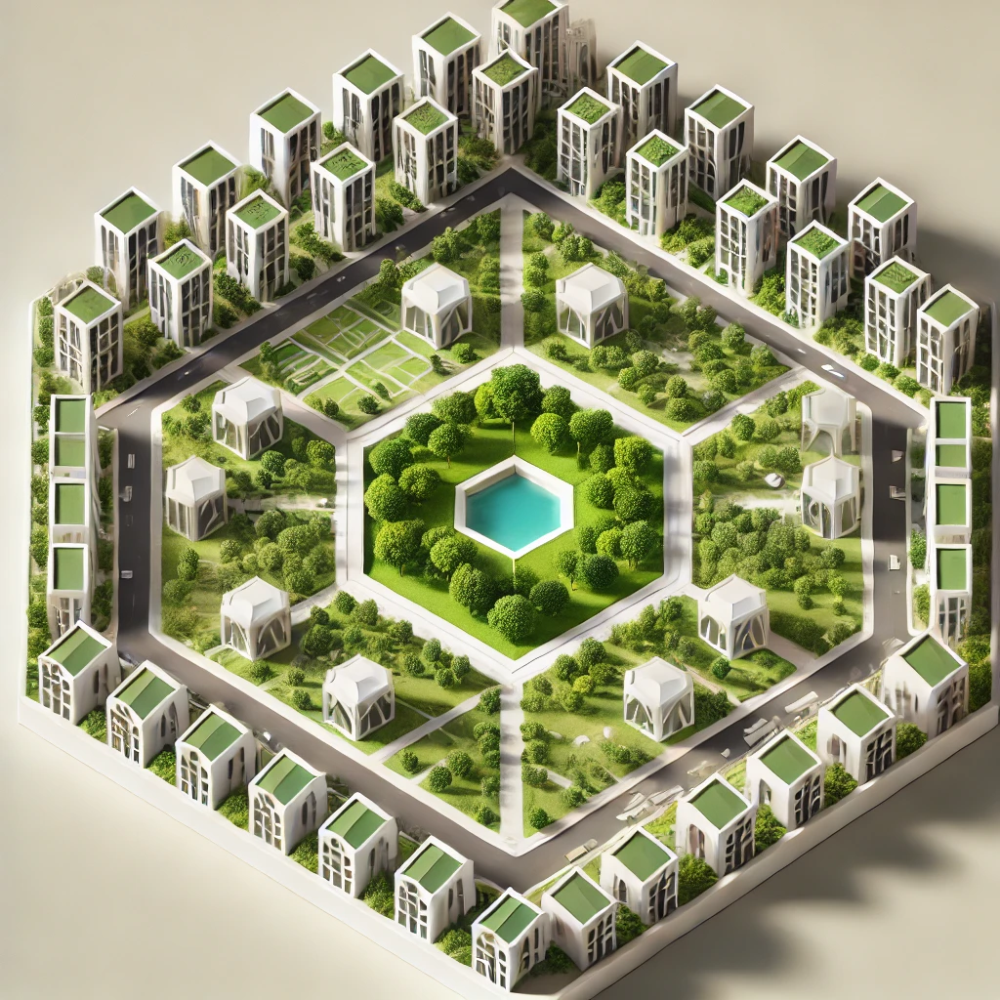

I. Introduction
What would you consider the greatest invention in the history of mankind? While the wheel, steam engine, or light bulb might come to mind, Harvard economist Edward Glaeser argues that cities are our most significant achievement. In "Triumph of the City," Glaeser describes cities as "the absence of physical space between people and companies" and demonstrates their fundamental role in human progress. His research reveals that more urbanized countries experience five times higher incomes and lower infant mortality rates compared to their less urbanized counterparts. Glaeser argues that meaningful human innovation began with the establishment of cities. When people live in close proximity, they become smarter through collaboration, leading to the advancement of civilization (Glaeser, 2011).
"Cities are humanity's greatest invention - the absence of physical space between people and companies."
- Edward Glaeser, Harvard Economist
As mankind's greatest invention, the city has continued to evolve, and we are now in the era of the smart city. The traditional definition of a smart city, as Dameri (2013) explains, focuses on "a well-defined geographical area, in which high technologies such as ICT, logistics, and energy production cooperate to create benefits for citizens." This technology-centric view dominates the perception of a smart city.
However, I argue that this definition is too narrow and fails to capture the true potential of smart urban development. I propose a more comprehensive definition: a smart city is an environment that beyond technology use, (1) promotes citizen's well-being, (2) maximizes human interactions while (3) occupying less space. This definition builds on Glaeser's emphasis on cities as catalysts for human interaction and addresses contemporary challenges due to rapid urbanization. This project will present a new smart city design that embodies this definition.
II. The Challenges: Why We Need a New Smart City
Over the past century, we've witnessed an extraordinary transformation in human population and land use. From 1.5 billion people a century ago to over 8 billion today, human has dramatically expanded its footprint. Global land use has changed dramatically over the past century, with significant impacts on the Earth's surface. Between 1960 and 2019, approximately 32% of the world's land area has been affected by land-use change, which is about four times greater than previously estimated primarily due to urbanization (Viglione, 2021). As humans increasingly develop land into urban areas, the trend of urbanization continues to accelerate: from 1.731 billion urban residents in 1980 (39% of global population) to 3.968 billion in 2015 (54%), with projections reaching 6.419 billion by 2050 (66% of humanity) (Urbanet, 2016). This rapid urbanization has led to poor air and water quality, waste-disposal problems, and high energy consumption, directly impacting human well-being (National Geographic, n.d.).
Beyond environmental challenges, cities face social issues. In his work "The Metropolis and Mental Life", Georg Simmel suggests the constant sensory overload of urban life leads to what he calls a "blasé attitude" - a psychological defense mechanism where individuals become increasingly indifferent to their surroundings and fellow citizens. This detachment is deepened with the impersonal, money-driven nature of urban interactions and fundamentally reshapes human connections within cities, shifting relationships from emotional to rational bases (Simmel, 1903).
These environmental and social challenges in the city bring us back to the definition of a smart city. My suggested definition attempts to address these issues: promoting citizen well-being in the face of environmental challenges, fostering meaningful human connections despite urban psychological strain, and minimizing spatial footprint to counter excessive land use.
III. Cyclic Road Network and Hexagonal Design
The road network itself can influence people's behavior and that behavior creates a lifestyle. For instance, some road networks encourage people to drive more while other kinds encourage people to walk more. Historically, the road network has been determined by the primary means of transportation of the era that the city was created. Rome, for example, the distance between intersections in the main street is about 35 meters, which is because Rome's urban structure was created by people walking around at that time. On the other hand, Manhattan has less dense intersections of about 60 to 200 meters since Manhattan was built in the days of horse-drawn carriages. In the case of Seoul, which was redeveloped later than Manhattan, the major intersections are further apart by 800 meters (based on Google Earth / Google Map measurements). These historical examples suggest that road networks have long been designed with careful consideration to meet specific urban needs and purposes.
Given this context, to achieve the goal of minimizing land use of the city, the shape and scale of the road network should be carefully determined. There are different options for the shape of the road network such as linear shape (NEOM The Line), radial shape (Paris), and grid shape (Manhattan). While these patterns can accommodate the growth of a city, they can lead to endless expansion because these road networks themselves have no set boundaries, consuming more and more of our limited land resources. Instead, I propose a circular, self-complete shape like a doughnut that would allow citizens to feel infinite space within a finite area as they follow the cyclic road network. A doughnut-shaped road network can also limit the over-expansion of a city because it is cyclic along its circular boundaries.
However, developing one huge doughnut-shaped city would be impractical and time-consuming. A more effective approach is to break the development into smaller, manageable units and connect them. But this raises a challenge: when arranging multiple circular cities together, empty space between the circles are created. For instance, four circular cities adjacent to each other create a star-shaped void in the middle. This layout contradicts the principles of a smart city as I propose, which aims to minimize inefficient land use. Then, how can we efficiently connect multiple units without wasting space?
The solution came from the honeycomb. Bees initially create circular cells that, when compressed together, naturally form space-efficient hexagons. Applying this principle to the design, I suggest a hexagonal city structure. When multiple hexagon-shaped cities are placed together, they fit perfectly like puzzle pieces, eliminating the empty area and maintaining connectivity. A simple calculation shows that a four-unit hexagonal layout requires only 70 square kilometers compared to 85 square kilometers for circular designs by reducing unused space in the middle. This means that a hexagon-shaped city can reduce a city's land use by approximately 20% compared to circular design. As mentioned above, the road network of the city would follow the hexagon's edges, forming the cyclic ring around the hexagon.
Interactive Demonstration
Click the blue button!
Natural honeycomb structure showing hexagonal optimization
Check the star-shaped empty space in the middle disappear as the shapes change from circles to hexagons
AI-generated Image: Hexagonal Design and Cyclic Road Network
The cyclic road network around hexagonal design directly addresses the third aspect of our smart city definition: minimizing spatial footprint. By eliminating unused land between cities through hexagonal design and limiting excessive space expansion through cyclic road network, the proposed urban structure will allow us to accommodate growing urban populations while consuming less land than traditional city layouts.
IV. Green Space and Active Sidewalk
AI-generated Image: Green space at the center of the city
At the center of each hexagonal unit will lie a green space, but my approach to green space goes beyond just creating a park. I suggest what I named a “gradient of nature.” Within a green space, the center and periphery are very different. The periphery borders urban areas while the center maintains distance from the city. It is desirable to design green spaces according to these different characteristics. Towards the center, the green space should be preserved in its natural state, and towards the edge, neighborhood parks should be created for urban accessibility. For example, the green space is divided into three main tiers. In the center of the green space is a zone like a national park where human access is minimized. Outside of this central park is a camping park where people can freely enter and enjoy nature, and in the part closest to the urban area is a neighborhood park, which is a smaller space integrated into residential areas. By gradually arranging green spaces of different characters depending on their distance from urban areas, we can ensure human use of nature while preserving it.

According to recent research that explored the association between urban green space and human health, there was a consistent negative association between exposure to urban green spaces and rates of mortality, heart disease, and violence. Conversely, a positive association was noted with improvements in attention, mood, and physical activity (Kondo, et al, 2018). This finding supports the assertion that green space in urban areas will contribute to the physical and mental well-being of citizens.
The well-being of the residents is not only about their physical and mental health, but also about how safe they feel in urban areas. For the safety of this new smart city, I suggest leveraging Jane Jacobs' assertion on the role sidewalks play in keeping cities safe in her work "The Uses of Sidewalks: Safety". Jacobs emphasizes that the safety of a city's streets correlates with its overall safety from crime and fear. Streets and sidewalks serve as vital public spaces where a mix of strangers and acquaintances interact, and their presence contributes to the informal surveillance that maintains public order. She also identifies three essential requirements for the sidewalk: eyes on the street, continuous pedestrian presence, and clear public-private space demarcation (Jacobs, 1961). Applying conditions for the sidewalk, I propose the smart city design to include sidewalks that satisfy the three requirements. To effectively implement her principles on the sidewalks, it is essential to ensure they are lined with a diverse range of businesses, such as cafes, retail shops, and service providers, that encourage frequent foot traffic and extended hours of activity.
Some might argue that in a smart city, advanced surveillance technologies like AI-powered monitoring cameras and big data collection could replace the role of sidewalks in maintaining safety. However, as Zuboff points out, relying only on surveillance technologies can lead to a significant imbalance between power and knowledge, shifting control from the public to the surveillance capitalists who collect and manage the data. This creates a scenario where personal autonomy is compromised, and citizens are merely subjects under continuous observation, stripped of their privacy and, potentially, their agency (Zuboff, 2015). Instead of replacing natural surveillance promoted by active sidewalks, technology should complement it, ensuring that the deployment of smart technologies is transparent and in line with democratic values that respect individual rights.
The proposed smart city elements, "gradient of nature" and active sidewalks, support the first aspect of the new smart city definition: promoting citizens’ well-being. The tiered green space not only preserves nature but also fosters mental and physical health through varied interactions with natural environments. Meanwhile, active sidewalks satisfying Jacobs’ three requirements create the conditions for natural surveillance, fostering a sense of security.
V. Advanced Urban Participatory Budgeting
Beyond the physical design, a smart city must create social systems that maximize civic engagement. I propose implementing urban participatory budgeting, a democratic innovation successfully used in Porto Alegre, Brazil. In this system, the city is divided into regions, each with its own participatory budget assembly where residents can directly engage in formulating concrete budget proposals. These assemblies also include city-wide thematic meetings on issues like culture and public transportation, allowing any residents to participate in decisions that affect the entire community. According to Wright, this system has proven effective in Porto Alegre, demonstrating several key benefits: it has invigorated public involvement in city affairs, reoriented spending toward community needs, and reduced corruption through budget transparency (Wright, 2011).
Some might argue that implementing such participatory systems in a large city would be impractical due to spatial and temporal limitations. However, smart city technologies can actually enhance rather than hinder citizen participation. While Porto Alegre relied on physical assemblies, smart cities can augment in-person meetings with digital platforms, real-time voting systems, and advanced visualization tools. For example, we can move beyond video calls such as ZOOM today to more realistic video conferencing through holographic communications to make remote participation more engaging and natural, maintaining the essential human element of face-to-face deliberation while increasing accessibility.
Kingsman: The Secret Service (Left) and Avengers: Endgame (Right). Holographic technology will allow for more effective communication
Research demonstrates that this enhanced civic participation yields significant social benefits. Studies have shown that neighborhoods with higher levels of civic participation experience greater community cohesion, lower crime rates, and improved citizen well-being (Pancer, 2015). Furthermore, civic engagement through participatory budgeting creates opportunities for building relationships of trust and reciprocity, which in turn enhances bonding and collective efficacy in neighborhoods (Collins et al., 2014).
This participatory approach directly advances the second aspect of our smart city definition - maximizing human interaction - by creating structured opportunities for citizens to meet, deliberate, and make decisions together. The combination of participatory budgeting and smart city technologies will foster a more responsive, transparent, and connected urban environment, building the community bonds essential to a truly smart city.
VI. Conclusion
This project began by challenging the traditional, technology-centric definition of a smart city. As rapid urbanization has led to environmental degradation and social alienation in cities, we need a new understanding of smart cities that addresses these fundamental challenges. Thus, I proposed a new definition of a smart city as an environment that, beyond technology use, (1) promotes citizens' well-being, (2) maximizes human interactions while (3) occupying less space.
The design elements presented in this project address each aspect of this definition. The hexagonal city structure with its cyclic road network directly addresses the third aspect by reducing land use and discouraging over-expansion. The "gradient of nature" green spaces and active sidewalks fulfill the first aspect by fostering physical and mental health through varied access to nature while ensuring safety through natural surveillance. Finally, the advanced participatory budgeting system addresses the second aspect by creating structured opportunities for meaningful human interaction through civic engagement.
I expect this approach to provide a blueprint for future urban development that puts human needs at the center while addressing the challenges of rapid urbanization.
VII. References
[1] Glaeser, E. L. (2011). Triumph of the city: How our greatest invention makes us richer, smarter, greener, healthier, and happier. New York: Penguin Press.
[2] Dameri, R. (2013). Searching for Smart City definition: a comprehensive proposal. International Journal of Computers & Technology. 11. 2544. 10.24297/ijct.v11i5.1142.
[3] Viglione, G. (2021). Land-use change has affected 'almost a third' of world's terrain since 1960. Carbon Brief. Retrieved from https://www.carbonbrief.org/land-use-change-has-affected-almost-a-third-of-worlds-terrain-since-1960/
[4] Urbanet. (2016). World urban population. Retrieved from https://www.urbanet.info/world-urban-population/
[5] National Geographic. (n.d). Urban Threats. Retrieved from https://www.nationalgeographic.com/environment/article/urban-threats
[6] Simmel, G. (1903). The Metropolis and Mental Life.
[7] Kondo, M. C., Fluehr, J. M., McKeon, T., & Branas, C. C. (2018). Urban Green Space and Its Impact on Human Health. International journal of environmental research and public health, 15(3), 445.
[8] Jacobs, J. (1961). The Use of Sidewalks: Safety.
[9] Zuboff, S. (2015). Big Other: Surveillance Capitalism and the Prospects of an Information Civilization. Journal of Information Technology, 30, 75-89.
[10] Wright, E. O. (2011). Real Utopias. Contexts, 10(2), 36-42. DOI: 10.1177/1536504211408884
[11] Pancer, S. M. (2015). The Psychology of Citizenship and Civic Engagement. Oxford University Press.
[12] Collins, C. R., Neal, J. W., & Neal, Z. P. (2014). Transforming Individual Civic Engagement into Community Collective Efficacy: The Role of Bonding Social Capital. American Journal of Community Psychology, 54(3-4), 328-336. https://doi.org/10.1007/s10464-014-9675-x